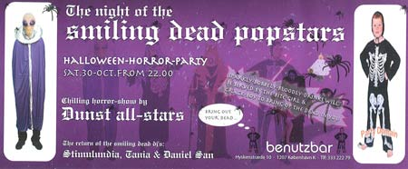

| dunst recommends | 30. Oktober 2004 |
 |
|
| The night of the Smiling dead
popstars. HALLOWEEN-HORROR-PARTY |
|
| DJ's: Stimulundia (dunst) Tania Daniel San Performance: Horror-Show (dunst) |
Bring out your dead... Sparkly-bobbely-bloodly-drinks will be served by the bite-girl & crack-boy to bring op the dead in you. |
Benutzbar, Hyskenstræde 10, 1207 København. kl. 22:00 - ? |
|